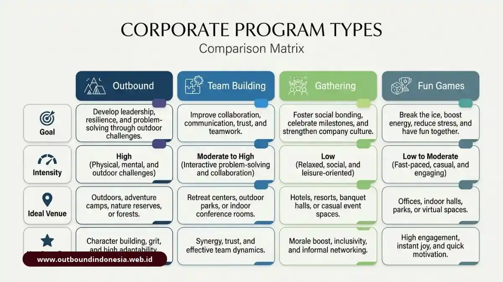

Perbedaan outbound dan team building terletak pada tujuan dan metodenya. Outbound adalah pembelajaran berbasis pengalaman di alam terbuka untuk membangun karakter, keberanian, dan kepemimpinan. Team building adalah intervensi terstruktur untuk memperbaiki kepercayaan, peran, dan koordinasi kerja tim. Gathering dan fun games berfungsi sebagai rekreasi dan hiburan tanpa evaluasi kinerja, sehingga pemilihannya harus mengikuti kebutuhan organisasi.
Mengapa Banyak Perusahaan Salah Memahami Istilah Outbound, Team Building, Gathering, dan Fun Games?
Keempat istilah itu sering dipakai bergantian, padahal masing-masing memiliki tujuan dan hasil yang berbeda. Kekeliruan ini membuat perusahaan membeli program yang tidak menjawab masalah yang sebenarnya.
Dalam praktik, divisi HRD kerap menyebut semua kegiatan keluar kantor sebagai "outbound" atau "team building". Akibatnya, tim yang sebenarnya bermasalah dengan miskomunikasi justru diberi acara hiburan, dan tim yang butuh pelepas penat diberi simulasi yang menuntut analisis. Dampaknya terasa pada anggaran: biaya keluar, tetapi perilaku kerja tidak bergeser.
Taruhannya cukup besar. Riset Gallup menunjukkan bahwa tim dengan tingkat kepercayaan dan komunikasi yang baik mencatat produktivitas sekitar 21 persen lebih tinggi dan angka absensi sekitar 41 persen lebih rendah. Angka itu menjelaskan mengapa program yang menyasar kepercayaan dan komunikasi layak diperlakukan sebagai investasi, bukan sekadar acara tahunan. Sumber riset dapat ditelusuri melalui halaman riset tempat kerja Gallup.
Apa Itu Outbound dan Bagaimana Metodenya Bekerja?
Outbound adalah metode pembelajaran berbasis pengalaman (experiential learning) yang dijalankan di alam terbuka. Peserta belajar dengan melakukan tantangan nyata, lalu merefleksikan apa yang terjadi.
Landasan teorinya adalah siklus pembelajaran David Kolb yang terdiri dari empat tahap:
- Pengalaman konkret: peserta menjalani tantangan langsung di lapangan.
- Observasi reflektif: peserta mengamati reaksi emosional dan perilakunya.
- Konseptualisasi abstrak: pengalaman dirangkum menjadi prinsip atau wawasan baru.
- Eksperimen aktif: prinsip tersebut dicoba kembali pada situasi simulasi baru.
Akar sejarahnya berasal dari gerakan Outward Bound yang dirintis Kurt Hahn dan Marina Ewald pada 1941. Informasi tentang organisasi tersebut tersedia di situs Outward Bound.
Dalam konteks korporasi, aktivitas seperti trekking, rafting, atau tantangan tali menjadi sarana untuk melatih keberanian mengambil keputusan, ketahanan mental, dan kepemimpinan. Outbound dipandu instruktur atau trainer terlisensi, dan sesi debriefing bersifat wajib serta mendalam. Tanpa debriefing, kegiatan hanya menjadi petualangan biasa, bukan pembelajaran.
Apa Itu Team Building dan Apa Landasan Teorinya?
Team building adalah intervensi terstruktur untuk memperbaiki hubungan sosial, kejelasan peran, dan koordinasi dalam sebuah tim. Hasil yang dituju adalah cara kerja kelompok yang lebih efektif, bukan sekadar keseruan.
Ada tiga kerangka ilmiah yang lazim dipakai:
- Tahapan perkembangan tim Tuckman: forming, storming, norming, dan performing. Kerangka ini membantu fasilitator mengenali fase psikologis kelompok yang sedang dihadapi.
- Kerangka GRPI: memeriksa empat elemen fundamental yaitu Goals (tujuan), Roles (kejelasan peran), Processes (proses kerja), dan Interpersonal (hubungan antarpribadi).
- Psychological Safety (Amy Edmondson): keyakinan anggota tim bahwa mereka aman untuk bertanya, mengakui kesalahan, dan menyampaikan pendapat tanpa rasa takut.
Secara praktis, team building bertumpu pada empat poros: penetapan tujuan (goal setting), relasi antarpribadi (interpersonal relations), kejelasan peran (role clarification), dan pemecahan masalah (problem solving). Fasilitatornya idealnya seorang master facilitator bersertifikat BNSP atau berlatar belakang psikologi.
Apa Bedanya Gathering dan Fun Games dari Outbound dan Team Building?
Gathering dan fun games adalah kegiatan rekreasi dan hiburan yang tidak dirancang untuk mengevaluasi atau mengubah kinerja. Tujuannya adalah suasana cair, keakraban, dan apresiasi.
Employee gathering berbentuk acara kebersamaan, seperti makan malam akhir tahun atau perjalanan santai, dengan MC atau host yang energik. Debriefing tidak ada atau hanya opsional. Fun games berfokus pada ice breaking dan permainan ceria berdampak rendah, dipandu seorang game master, dan biasanya ditutup dengan pengumuman pemenang.
Keduanya bernilai ketika tujuannya memang melepas penat atau memberi penghargaan. Masalah muncul hanya ketika keduanya dipilih untuk menyelesaikan persoalan koordinasi atau konflik antardivisi, yang sesungguhnya memerlukan intervensi terstruktur.
Bagaimana Perbandingan Empat Program Berdasarkan Enam Parameter?
Keempat program dapat dibedakan dengan enam parameter: fokus tujuan, jenis aktivitas, tingkat kesulitan, peran debriefing dan fasilitator, output, serta lokasi.

Matriks perbandingan komparatif empat format pengembangan tim perusahaan| Aspek | Outbound Training | Team Building | Employee Gathering | Fun Games |
|---|---|---|---|---|
| Fokus utama | Pengembangan skill dan karakter | Efektivitas dan sinergi kelompok | Rekreasi dan apresiasi sosial | Ice breaking dan hiburan |
| Pendekatan | Experiential learning di luar ruangan | Problem solving dan refleksi | Acara dan hiburan santai | Permainan ceria dampak rendah |
| Peran debriefing | Wajib dan mendalam | Wajib, dihubungkan ke pekerjaan | Tidak ada atau opsional | Pengumuman pemenang |
| Fasilitator | Instruktur/trainer terlisensi | Master facilitator (BNSP/Psikologi) | MC atau host energik | Game master |
| Output | Mental tangguh dan kepemimpinan | Kepercayaan, kolaborasi, indikator retensi | Penyegaran dan keakraban | Suasana cair dan ceria |
Kapan Perusahaan Sebaiknya Memilih Outbound, Team Building, atau Gathering?
Pilihan program mengikuti masalah yang ingin dipecahkan: karakter dan keberanian untuk outbound, koordinasi dan kepercayaan untuk team building, serta pemulihan semangat untuk gathering.
- Kapan outbound menjadi pilihan tepat? Cocok ketika perusahaan ingin membentuk mental tangguh, keberanian mengambil keputusan, dan kepemimpinan. Contohnya pada kelompok calon pemimpin (management trainee), karyawan baru, atau tim yang perlu keluar dari zona nyaman.
- Kapan team building menjadi pilihan tepat? Cocok ketika masalahnya ada pada miskomunikasi, silo mentality antardivisi, atau penyatuan tim setelah merger dan reorganisasi. Perusahaan membutuhkan analisis perilaku dan debriefing yang menghubungkan temuan dengan pekerjaan.
- Kapan gathering atau fun games menjadi pilihan tepat? Cocok ketika tim mengalami kelelahan (burnout) setelah periode kerja padat, atau saat perusahaan ingin memberi apresiasi akhir tahun tanpa beban evaluasi.
Apa Itu Program Hybrid Outbound dan Team Building?
Program hybrid adalah rancangan yang menggabungkan tantangan fisik outbound dengan analisis debriefing mendalam khas team building. Hasilnya lebih seimbang: peserta menikmati kegiatan fisik sekaligus memperoleh wawasan nyata yang bisa diaplikasikan di kantor.
Format ini sangat ideal bagi perusahaan yang membutuhkan keberanian dan kepercayaan secara bersamaan, misalnya tim lintas fungsi yang baru dibentuk dan harus segera mengejar target bersama.
Seperti Apa Contoh Kasus Penerapan Ketiga Pendekatan Ini?
Contoh kasus berikut bersifat ilustrasi untuk menunjukkan logika pemilihan program yang tepat sasaran:
- Kasus 1 (Silo Mentality Penjualan vs Operasional): Kedua divisi saling menyalahkan saat pengiriman terlambat. Rapat koordinasi formal berulang kali gagal. Masalahnya ada pada kejelasan peran dan kepercayaan antarpribadi, sehingga solusi tepat adalah team building dengan simulasi problem solving dan debriefing mendalam, bukan gathering santai.
- Kasus 2 (Supervisor Ragu Mengambil Keputusan): Para supervisor baru ragu bertindak di bawah tekanan waktu. Kebutuhan utamanya adalah ketahanan mental dan kepemimpinan personal, sehingga modul outbound dengan tantangan alam bertahap menjadi opsi terbaik.
- Kasus 3 (Tim Lelah Pasca-Proyek Besar): Tim baru saja menyelesaikan peluncuran produk besar dan mengalami kelelahan fisik-mental tanpa konflik internal. Pilihan paling proporsional adalah employee gathering dipadu fun games rekreasi.
Apa Kesalahan Umum Saat Memilih Program Pengembangan Tim?
Kesalahan paling sering adalah memilih vendor atau paket semata-mata berdasarkan keseruan aktivitas atau harga murah, bukan berdasarkan akar masalah organisasi yang ingin diselesaikan.
Kesalahan lain meliputi menyamakan semua kegiatan keluar kantor sebagai satu jenis, mengabaikan peran krusial debriefing, serta tidak memeriksa lisensi kompetensi fasilitator. Banyak perusahaan juga tidak menetapkan indikator keberhasilan sebelum acara, sehingga dampaknya sulit diukur setelah kegiatan berakhir.
Kesimpulan Praktis
Pilih program pengembangan dengan alur logis: tentukan masalah organisasi terlebih dahulu, cocokkan dengan jenis program yang tepat, lalu pastikan fasilitator dan sesi debriefing dirancang sesuai target.
- Gunakan outbound untuk membentuk karakter, keberanian, dan kepemimpinan individu.
- Gunakan team building untuk memperbaiki komunikasi, kejelasan peran, dan kepercayaan kelompok.
- Gunakan gathering atau fun games untuk rekreasi melepas penat dan apresiasi sosial.
- Gunakan program hybrid 2D1N bila tim membutuhkan kombinasi tantangan alam dan perbaikan dinamika kerja nyata.

Tim Outbound Indonesia
Praktisi instruktur certified BNSP, spesialis simulasi team building korporat, dan konsultan pengembangan SDM.